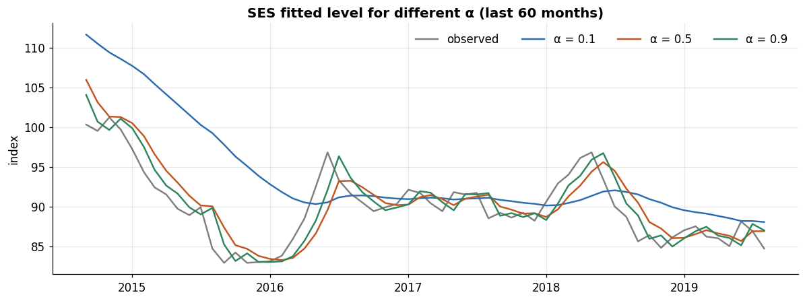
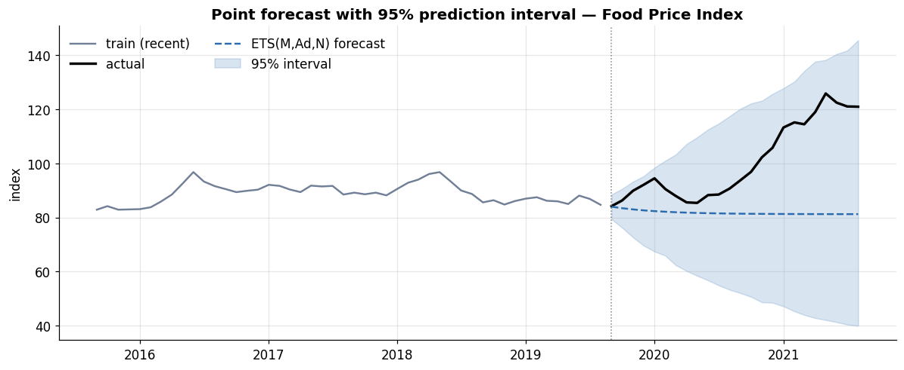

Series:Time Series Analysis in Python — from Statistical Modeling to Machine Learning
Parts 1 and 2 were preparation: we learned to handle time-indexed data and to test and transform it for stationarity. Part 3 is where we finally forecast. The family we start with — moving averages and exponential smoothing — is old, fast, and remarkably hard to beat. These models absorb trend and seasonality directly (no differencing required), and they give us the honest baselines every fancier model in later parts must outperform to justify itself.
What you will learn
A minimal but correct forecasting setup — train/test split, horizon, error metrics, and naive baselines
Moving averages — simple and weighted — as smoothers and forecasters
Simple Exponential Smoothing (SES) and the smoothing parameter α
Holt’s linear trend method (and the damped-trend variant)
Holt–Winters seasonal smoothing — additive vs. multiplicative
The ETS (Error–Trend–Seasonal) framework and automatic model selection by AIC
Prediction intervals for smoothing models
A head-to-head model comparison on a real hold-out set
Dataset
Still monthly_price.csv — 356 months (Jan 1992–Aug 2021). We forecast the Food Price Index as our running example (trend-dominated, lightly seasonal), and use Rice price to demonstrate seasonal smoothing.
Scope note. We introduce just enough evaluation to compare models honestly here. The rigorous treatment — proper cross-validation, walk-forward backtesting, and the full metric zoo (MASE, sMAPE, pinball loss) — is Part 6. Treat this part’s single train/test split as a first, deliberately simple yardstick.
0. Setup, data, and a train/test split
We rebuild the index as before and hold out the last 24 months as a test set we never fit on. Everything is evaluated on that hold-out.
The naive line is flat at the last observed value; the drift line extends the long-run upward slope of the whole training period; seasonal-naive repeats last year’s shape. We score all three on the hold-out below — they are the bars any “real” model must clear.
2. Moving averages — the simplest smoother
A moving average (MA) replaces each point with the mean of a window around it. It is primarily a smoother (for seeing trend through noise), but the last window mean can also serve as a crude forecast.
Trailing MA uses only past values (rolling(k).mean()) — causal, usable for forecasting.
Centered MA averages symmetrically around each point — smoother, but “sees the future,” so it is for visualization only, never forecasting.
Weighted MA (WMA) gives more weight to recent points — a step toward exponential smoothing.
Two limitations are visible. The trailing MA lags the series (it turns after the data does), and every MA forecast beyond the training end is just a flat line at the last window mean — it cannot project a trend. Exponential smoothing fixes the weighting; Holt’s method fixes the flatness.
{'model': 'Moving average (12)', 'MAE': np.float64(14.727), 'RMSE': np.float64(20.177), 'MAPE%': np.float64(13.08)}
3. Simple Exponential Smoothing (SES)
A moving average weights the last \(k\) points equally and ignores everything older. That is arbitrary. Exponential smoothing instead weights all past observations, with weights that decay geometrically into the past. The one parameter, the smoothing level α ∈ (0, 1), sets how fast:
α near 0 — react slowly, heavy smoothing, forecasts are stable.
SES models level only — no trend, no seasonality — so its forecast is a flat line at the final smoothed level. It is the right tool for a series that hovers around a slowly-changing mean.
# Effect of alpha (fit level manually to visualize)fig, ax = plt.subplots(figsize=(11, 4.2))ax.plot(train.index[-60:], train.iloc[-60:], color="black", alpha=0.5, label="observed")for a, c inzip([0.1, 0.5, 0.9], PALETTE): m = SimpleExpSmoothing(train, initialization_method="estimated").fit( smoothing_level=a, optimized=False) ax.plot(m.fittedvalues.index[-60:], m.fittedvalues.iloc[-60:], color=c, label=f"α = {a}")ax.set_title("SES fitted level for different α (last 60 months)")ax.set_ylabel("index"); ax.legend(frameon=False, ncol=4)plt.tight_layout(); plt.show()

Larger α hugs the data; smaller α produces a smooth, sluggish line. Rather than guess, let statsmodels optimize α by maximum likelihood.
The optimizer pushes α ≈ 1 — because the Food Price Index is strongly trending and persistent, SES decides the best “level-only” bet is to trust the very last value. In other words, on a trending series SES collapses to the naive forecast and inherits its flat-line lag. That is not a failure of the code; it is SES honestly reporting that a level-only model is the wrong shape here. The fix is to give the model an explicit trend.
4. Holt’s linear trend method
Holt extends SES with a second equation that tracks a trend. Now two components evolve — the level (smoothed by α) and the slope (smoothed by β) — and the forecast is a sloped line rather than a flat one:
\[\hat{y}_{t+h} = \ell_t + h\,b_t\]
where \(\ell_t\) is the level and \(b_t\) the trend at the end of training.
A plain Holt forecast extends the last slope forever, which often over-shoots at long horizons — real trends flatten. The damped-trend variant multiplies the slope by a damping factor φ ∈ (0, 1) each step ahead, so the forecast bends toward a horizontal line. Damping is one of the most reliable practical tweaks in all of forecasting.
Adding a trend moves the forecast off the flat SES line — but notice it can move it the wrong way. Holt reads the recent slope of the training data (mildly downward into 2019) and projects it forward, whereas the test period actually surged (the 2020–21 food-price spike). So the linear extrapolation heads down while reality climbs, and it scores worse than flat SES on this hold-out; damping limits the damage by flattening the projected slope. This previews a hard truth: no smoothing model anticipates a shock, and blindly extrapolating a recent trend can backfire — which is exactly why we judge on a hold-out and let AIC, not the eye, choose the specification.
5. Holt–Winters — adding seasonality
Holt–Winters (HW) adds a third component and smoothing parameter (γ) for seasonality, tracking a repeating pattern of length \(m\) (12 for monthly data). As with decomposition in Part 2, seasonality can enter two ways:
Additive — the seasonal swing is a roughly constant number of units, independent of level: \(\hat{y}_{t+h} = \ell_t + h b_t + s_{t+h-m}\).
Multiplicative — the swing scales with the level (typical of prices): \(\hat{y}_{t+h} = (\ell_t + h b_t)\, s_{t+h-m}\).
Because our commodities are only lightly seasonal, we switch to Rice price to make the seasonal component visible, and fit both flavours.
The seasonal factors are small relative to the price level — confirming, yet again, the “light seasonality” finding from Parts 1–2. Holt–Winters still fits happily; it simply reports a modest seasonal term. On strongly seasonal data (electricity, retail) these bars would be large and HW would decisively beat the non-seasonal methods.
6. The ETS framework and automatic selection
SES, Holt, and Holt–Winters are not separate inventions — they are special cases of one state-space family called ETS, for Error, Trend, Seasonal. Each component is tagged:
Error: Additive (A) or Multiplicative (M)
Trend: None (N), Additive (A), or Additive-damped (Ad)
Seasonal: None (N), Additive (A), or Multiplicative (M)
So ETS(A,N,N)is simple exponential smoothing, ETS(A,A,N) is Holt’s linear method, ETS(A,Ad,A) is damped Holt–Winters additive, and so on. Naming the components this way lets us search the whole family automatically and pick the best specification by an information criterion (AIC), which rewards fit and penalizes extra parameters — exactly the principled model selection we want.
def ets_search(train, seasonal_periods=12, positive=True): results = [] errors = ["add", "mul"] if positive else ["add"] trends = [None, "add"] seasonals= [None, "add", "mul"] if positive else [None, "add"]for e in errors:for t in trends:for damped in ([False, True] if t else [False]):for s in seasonals:try: m = ETSModel(train, error=e, trend=t, damped_trend=damped, seasonal=s, seasonal_periods=seasonal_periods, initialization_method="estimated") r = m.fit(disp=False) tag =f"ETS({e[0].upper()},{'N'ifnot t else ('Ad'if damped else'A')},"\f"{'N'ifnot s else s[0].upper()})" results.append({"spec": tag, "error": e, "trend": t,"damped": damped, "seasonal": s,"AIC": round(r.aic, 1), "obj": r})exceptException:passreturn pd.DataFrame(results).sort_values("AIC").reset_index(drop=True)search = ets_search(train)search[["spec", "AIC"]].head(8)
spec
AIC
0
ETS(M,Ad,N)
1431.2
1
ETS(M,Ad,M)
1443.9
2
ETS(M,Ad,A)
1445.7
3
ETS(M,N,N)
1461.6
4
ETS(M,A,N)
1462.2
5
ETS(M,N,M)
1475.1
6
ETS(M,A,M)
1475.3
7
ETS(M,N,A)
1477.7
The lowest-AIC specification is our automatically selected model. Let’s refit the winner, forecast, and score it against everything so far.
best = search.iloc[0]best_ets = best["obj"]ets_fc = best_ets.forecast(H)print("Selected by AIC:", best["spec"], " (AIC =", best["AIC"], ")")print(score(best["spec"], test, ets_fc))
A point forecast without an interval is overconfident. The ETS state-space form gives prediction intervals analytically: get_prediction(...).summary_frame() returns the mean plus pi_lower / pi_upper. Intervals widen with the horizon — uncertainty compounds the further ahead you look.
pred = best_ets.get_prediction(start=len(train), end=len(train) + H -1)sf = pred.summary_frame(alpha=0.05) # 95% intervalsf.index = test.indexfig, ax = plt.subplots(figsize=(11, 4.6))ax.plot(train.index[-48:], train.iloc[-48:], color=PALETTE[5], label="train (recent)")ax.plot(test.index, test, color="black", lw=2.2, label="actual")ax.plot(sf.index, sf["mean"], color=PALETTE[0], ls="--", label=f"{best['spec']} forecast")ax.fill_between(sf.index, sf["pi_lower"], sf["pi_upper"], color=PALETTE[0], alpha=0.18, label="95% interval")ax.axvline(test.index[0], color="grey", lw=1, ls=":")ax.set_title("Point forecast with 95% prediction interval — Food Price Index")ax.set_ylabel("index"); ax.legend(frameon=False, ncol=2)plt.tight_layout(); plt.show()covered = ((test >= sf["pi_lower"]) & (test <= sf["pi_upper"])).mean() *100print(f"share of actual test points inside the 95% band: {covered:.0f}%")

share of actual test points inside the 95% band: 100%
The band fans out with distance, and we can check calibration directly: for a well-specified 95% interval, roughly 95% of actual points should fall inside. Reporting that coverage number is a good habit — an interval that is too narrow is worse than no interval, because it hides risk.
8. Head-to-head comparison
Finally, put every model on the same hold-out and rank them. This is the payoff: a single table that says which method wins and whether any of them beats the trivial baselines.
all_forecasts = {"Naive": baselines["Naive"],"Seasonal naive": baselines["Seasonal naive"],"Drift": baselines["Drift"],"Moving avg (12)": ma_fc,"SES": ses_fc,"Holt linear": holt_fc,"Holt damped": holt_d_fc, best["spec"]: ets_fc,}leaderboard = (pd.DataFrame([score(n, test, f) for n, f in all_forecasts.items()]) .sort_values("RMSE").reset_index(drop=True))leaderboard
Best model : Drift (RMSE 20.09)
Best baseline RMSE: 20.09 -> baseline wins!
Two lessons this table teaches — both more valuable than any single winner:
Always check against baselines. If the best “real” model can’t beat naive or drift, the honest conclusion is that the series has little exploitable structure at this horizon, not that you need a bigger model.
Complexity must earn its place. Trend/damping/seasonality each help only when the data actually contains that component — which is why AIC-based selection, not habit, should choose the specification.
9. Exercises
α sensitivity. Fit SES to VIX_Index with α ∈ {0.05, 0.3, 0.8}; plot the fitted level and note which best tracks the volatility spikes.
Damping matters. Forecast Energy_Price_Index 24 months ahead with Holt linear vs. Holt damped. Which overshoots, and by how much (RMSE)?
Seasonal or not? Fit HW additive and multiplicative to Maize_Price and compare to a non-seasonal Holt on the same hold-out. Does seasonality help?
Auto-ETS everywhere. Run ets_search on all three crop series and report each selected specification. Do trend/seasonal choices agree with Parts 1–2?
Interval calibration. For the best ETS on Rice_Price, compute the % of test points inside the 80% and 95% intervals. Are the intervals well-calibrated?
Forecast against baselines. Naive, seasonal-naive, and drift are the bar; a model that can’t clear it hasn’t earned its complexity.
Moving averages smooth but lag, and forecast a flat line — fine for trend visualization, weak for projection.
SES weights the past with geometrically decaying weights (one parameter, α); it models level only, so on a trending series it degenerates toward naive.
Holt adds a trend (β); damping (φ) keeps long horizons from overshooting and is a reliable default.
Holt–Winters adds seasonality (γ), additive or multiplicative — the latter for swings that scale with level.
ETS unifies all of these as (Error, Trend, Seasonal) states, enabling automatic selection by AIC and analytic prediction intervals. Always report an interval, and check its coverage.
What’s next — Part 4: the ARIMA family
Part 4 takes the other classical route: instead of smoothing components, it models a series’ autocorrelation directly with AR, MA, ARIMA, and SARIMA. The stationarity tests and ACF/PACF reading from Part 2 become the tools for choosing model orders — and we’ll benchmark ARIMA head-to-head against today’s ETS winner.